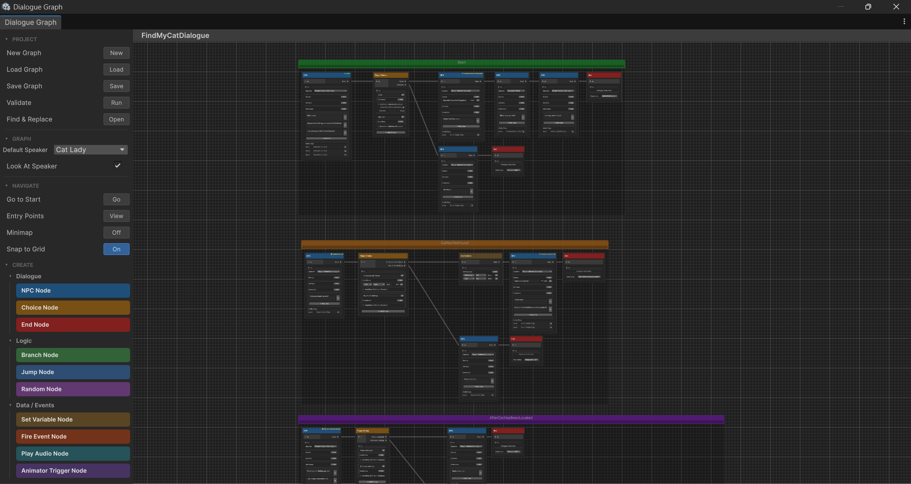
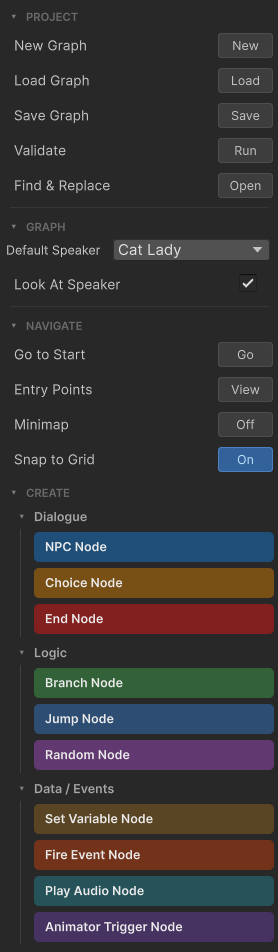
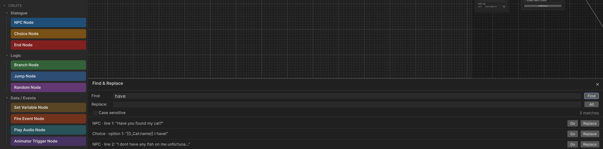
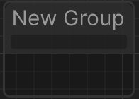
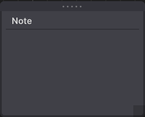

Graph Editor
The graph editor is the primary authoring tool in Threader. It opens as a Unity EditorWindow and runs entirely in edit mode — no Play mode required to build or preview dialogues.
Opening the editor
Double-click any Dialogue Graph asset in the Project window. The editor opens and loads that graph automatically. You can also open it via Threader → Graph Editor in the Unity menu bar and then load a graph from the sidebar.
Layout
The editor is split into two panels separated by a draggable divider:
- Left panel — Sidebar: project operations, graph settings, navigation, and node creation
- Right panel — Canvas: infinite scrollable graph canvas where nodes live
Both panels remember their sizes between sessions via EditorPrefs.

Canvas controls
| Action | How |
|---|---|
| Pan | Middle-mouse drag, or Alt + left-drag |
| Zoom | Scroll wheel |
| Select a node | Left-click |
| Multi-select | Left-drag a box, or Shift+click individual nodes |
| Move nodes | Left-drag selected nodes |
| Connect nodes | Drag from an output port to an input port |
| Disconnect an edge | Right-click the edge → Delete, or select and press Delete |
| Context menu | Right-click on the canvas background or a node |
| Frame selected | F |
| Frame all | A |
Sidebar sections

PROJECT
| Button | What it does |
|---|---|
| New | Prompts for a name and creates a new DialogueGraph asset in the currently selected folder |
| Load | Opens an object picker to load an existing graph |
| Save | Writes all unsaved changes to the asset on disk (Ctrl+S also works) |
| Validate | Runs the graph validator and shows a list of warnings/errors inline |
| Find & Replace | Opens the find/replace panel (see below) |
An orange ● Unsaved indicator appears in the toolbar whenever the graph has changes not yet written to disk. Closing the window or switching graphs while unsaved changes are present will prompt you to save.
GRAPH
| Field | Description |
|---|---|
| Default Speaker | Fallback speaker name for any NPC node whose own Speaker field is blank. Populated from your SpeakerRoster assets. Nodes with no override show (Graph Default: X) in their dropdown, updating live as you change this value. |
| Look At Speaker | When ticked, any scene object that implements IDialogueFocus (e.g. a first-person camera controller) will automatically rotate to face the current speaker's transform each time an NPC node fires. Toggle this per-graph. |
NAVIGATE
| Button | What it does |
|---|---|
| Go to Start | Pans and zooms the canvas to frame the start node |
| Entry Points | Lists all named entry points defined in the graph; click any to jump there |
| Minimap | Toggles the floating minimap overlay (preference saved per session) |
| Snap to Grid | Snaps all node movement to a 20 px grid (preference saved per session) |
CREATE
A set of colour-coded pills for every node type, grouped into categories:
- Dialogue — NPC Node, Player Choice Node, End Node
- Logic — Branch Node, Jump Node, Random Node
- Data / Events — Set Variable Node, Fire Event Node, Play Audio Node, Animator Trigger Node
- Utility — Debug Node, Wait Node, Group, Sticky Note
Click a pill to create the node at the canvas centre.
Drag a pill directly onto the canvas to place it at the drop position.
Keyboard shortcuts
| Key | Action |
|---|---|
N |
Create NPC Node |
C |
Create Player Choice Node |
E |
Create End Node |
D |
Create Debug Node |
J |
Create Jump Node |
B |
Create Branch Node |
V |
Create Set Variable Node |
R |
Create Random Node |
F2 |
Create Fire Event Node |
F3 |
Create Play Audio Node |
F4 |
Create Animator Trigger Node |
F5 |
Create Wait Node |
G |
Group selected nodes into a comment box |
Z |
Add a sticky note at the cursor position |
F |
Frame / zoom to selected nodes |
A |
Frame all nodes |
Space |
Open node search window |
Ctrl+D |
Duplicate selected nodes |
Ctrl+C / Ctrl+V |
Copy and paste selected nodes |
Ctrl+Z |
Undo last graph change |
Delete / Backspace |
Delete selected nodes or edges |
Ctrl+S |
Save graph |
Typing shortcuts are blocked while a sticky note, text field, or other input control has focus — you won't accidentally create nodes while typing dialogue text.
Node context menu
Right-click any node to open its context menu:
| Option | Effect |
|---|---|
| Set as Start Node | Makes this node the graph's entry point (green ▶ START badge) |
| Set as Entry Point… | Opens a dialog to assign a named entry-point key to this node (yellow ⚑ badge appears) |
| Remove Entry Point | Clears the entry point key from this node |
| Set Colour | Opens the colour picker (None / Red / Orange / Yellow / Green / Blue / Purple) |
| Duplicate | Creates a copy of the node with a new GUID, positioned slightly offset |
| Delete | Removes the node and all edges connected to it |
A 4 px accent border on the left side of the node shows any assigned colour. The colour is purely organisational — it has no effect on execution.
Speaker Roster assets
Speaker Roster assets define the valid speaker names in your project. Without one, the Speaker dropdowns across all node types fall back to scanning all SpeakerRoster assets in the project — which still works, but is slower and may pick up unrelated assets.
Setup:
- Right-click in the Project window → Create → Threader → Speaker Roster
- Click + in the Inspector and type each speaker name exactly as it appears on the corresponding
NPCDialoguecomponent in the scene - Assign the asset to DialogueManager → Speaker Rosters in the Inspector
Once assigned, every Speaker dropdown in the graph editor shows only names from your roster. A ⚠ prefix on a dropdown entry means the stored value doesn't match any roster entry — the old value is preserved (never silently lost), but you should resolve the mismatch.
You can assign multiple roster assets to the DialogueManager — all are combined into one list for the dropdowns.
Setting up speakers
Every speaker name used in the graph must have a matching NPCDialogue component in the scene with the identical name in its Speaker Name field. This is how the system finds the character's transform for camera look-at, spatial audio positioning, and Animator targeting.
Primary NPC (the character the player talks to directly):
- Add
NPCDialogueto the NPC's root GameObject - Graph — drag the
DialogueGraphasset here - Speaker Name — type the name exactly, e.g.
"Villager"— must match the NPC node's Speaker field - Is Interactable — leave checked
Secondary speaker (appears in the same graph but is not a directly interactable NPC):
- Add
NPCDialogueto that character's GameObject too - Graph — leave empty (secondary speakers don't own the graph)
- Speaker Name — must exactly match the name used in the graph node
- Is Interactable — uncheck this
Without the NPCDialogue component on a secondary speaker, the system has no transform to target — look-at and Animator actions for that name silently do nothing. No errors are thrown, but a warning will appear in the Console.
Speaker Name matching is case-sensitive. If look-at or Animators aren't working, a name mismatch is the first thing to check.
Find & Replace
Open via PROJECT → Find & Replace in the sidebar. Searches all NPC line text and Player Choice button text in the currently loaded graph.
| Field | Description |
|---|---|
| Find | Type a term and press Enter or click Find to search |
| Replace | The replacement text |
| Case Sensitive | Toggle; re-runs the search automatically when changed |
| Results list | Each match shows: speaker name or type, line index, and a preview snippet |
Per-result buttons:
- Go — selects and frames that node in the graph
- Replace — replaces that single occurrence (undoable)
- All — replaces every match at once (undoable, single undo step)
After any replacement the graph view refreshes and the search re-runs automatically so remaining matches are immediately visible.

Comment / Group boxes

Select one or more nodes and press G (or drag the Group pill from the sidebar) to wrap them in an organisational comment box.
- Double-click the title to rename it
- Click the Notes text area below the title to type multi-line annotations (saved with the graph)
- Right-click the group to change its colour (Default / Red / Orange / Yellow / Green / Blue / Purple) or delete it
- Drag nodes in and out of a group to include or exclude them
- Sticky notes can also be dragged into a group; they snap in and are saved as part of that group
Groups are purely visual — they have no effect on dialogue execution.
Sticky notes

Press Z or right-click the canvas → Add Sticky Note to place a free-floating annotation anywhere on the canvas.
- Click the title or body to edit the text inline
- Drag by the title bar to reposition
- Drag the bottom-right corner handle to resize
- Drag onto a Group box to attach it to that group
Right-click a sticky note for:
| Menu | Options |
|---|---|
| Theme | Classic / Black / Dark / Orange / Red / Purple / Teal |
| Font Size | Small / Medium / Large / Huge |
Sticky notes are saved with the graph asset and are never shown at runtime.
Dialogue Preview Window
The preview window is covered on its own page — see Dialogue Preview Window.
Validation
Click Validate in the sidebar PROJECT section to run a static check over the loaded graph. The validator looks for:
- Nodes with no outgoing connection (potential dead ends other than End nodes)
- Choice nodes with no choices defined
- Jump nodes pointing at tags that don't exist
- Branch or condition variables that don't exist in any assigned
DialogueVariablesasset - Missing audio clips in Play Audio nodes
- NPC nodes with no lines
Each issue is listed inline with a Go button to jump directly to the offending node.
After a script recompile
Unity recompiles all scripts when you save a .cs file. The graph editor re-loads automatically after a recompile. If the canvas appears empty after a recompile, click Load in the sidebar or close and re-open the window.